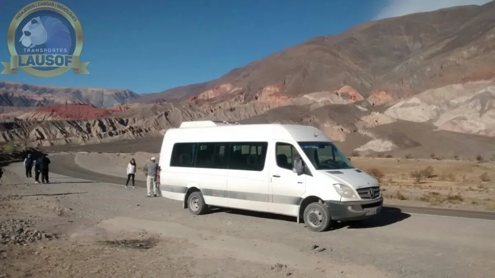
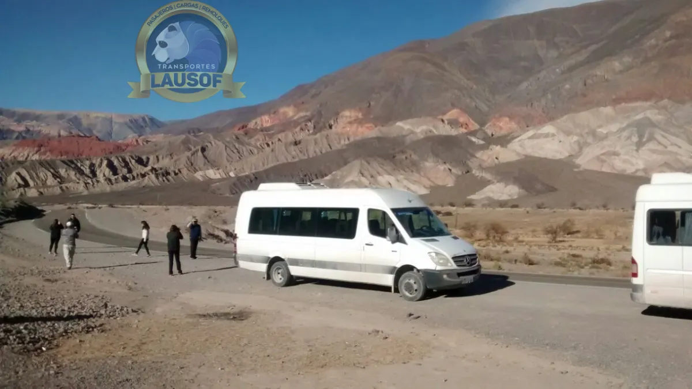
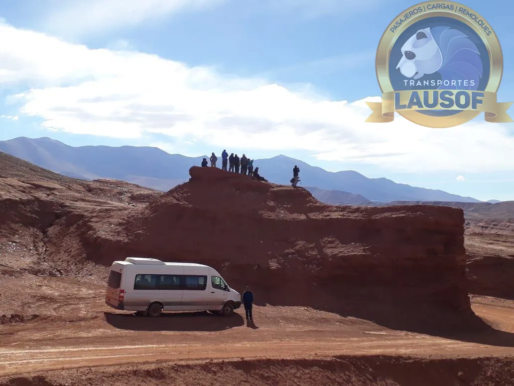

Traslado en combi al Carnaval de la Quebrada, ida y vuelta desde Salta
Una combi de 19+1 plazas con chofer profesional lleva al grupo desde Salta a Humahuaca, Tilcara o Purmamarca y lo trae de vuelta: cada noche, o con la unidad a disposición durante los días de carnaval. Nadie del grupo maneja de regreso.
Carnaval 2027
Las fechas del Carnaval de la Quebrada 2027
El lunes 8 y el martes 9 de febrero son feriados nacionales, así que el Carnaval Grande cae en un fin de semana largo de cuatro días. Es cuando más gente sube a la Quebrada.
-
Jueves de CompadresUno de los jueves previos al carnaval, con festejos en los pueblos de la Quebrada.Cotizar la combi →
-
Jueves de ComadresEl último jueves antes del Carnaval Grande.Cotizar la combi →
-
Carnaval GrandeArranca con el desentierro del diablo carnavalero. Humahuaca, Tilcara, Maimará y Purmamarca.Cotizar la combi →
-
Martes de ChayaÚltimo día del fin de semana largo de carnaval.Cotizar la combi →
-
Carnaval ChicoLos festejos que siguen después del feriado, hasta el entierro del carnaval.Cotizar la combi →
El Carnaval 2027 ya pasó. Cuando se anuncien las fechas del próximo carnaval las publicamos acá; mientras tanto, el viaje a la Quebrada se cotiza igual por WhatsApp.
Lausof SRL es una empresa de transporte independiente. No organiza el Carnaval de la Quebrada ni ninguno de sus festejos. Las fechas y la programación se confirman con cada municipio y con el Ministerio de Cultura y Turismo de Jujuy. Fechas verificadas el 10/10/2026 en el cronograma 2027 publicado por Todo Jujuy y Qué Pasa Jujuy.
Cómo se llega
De Salta a la Quebrada por la RN 9
El camino pasa por San Salvador de Jujuy, Yala y Volcán. En el cruce con la RN 52 se desvía a Purmamarca; Maimará, Tilcara y Humahuaca siguen por la RN 9. Tiempos estimados en auto (aproximados): en combi y con el tránsito de carnaval, el viaje es más largo.
- Purmamarca — 179 km por la RN 9 y la RN 52, unas 2 h 15 de manejo (aproximado)
- Tilcara — 197 km por la RN 9, unas 2 h 30 de manejo (aproximado)
- Humahuaca — 239 km por la RN 9, unas 3 h de manejo (aproximado)
El sábado de Carnaval Grande de 2026 (14 de febrero) la RN 9 tuvo largas filas en sentido norte desde Yala, rumbo a la Quebrada (Todo Jujuy). Por eso la salida se acuerda temprano y con margen.
Al 10/10/2026 no hay cortes de ruta anunciados para el carnaval 2027. Si se anuncian, los sumamos acá con su fuente y su fecha.
Dónde dormir y cómo volver
Con la Quebrada llena, la vuelta se arma antes de salir
En el Carnaval 2026 la ocupación hotelera de la Quebrada llegó al 98 %, con 98,9 % en Tilcara y 98,2 % en Purmamarca, y San Salvador de Jujuy al 97,6 %, según el Ministerio de Cultura y Turismo de Jujuy. Muchos grupos duermen en Salta y suben cada día. Hay tres formas de armar el viaje:
El grupo sale de Salta, el chofer espera en el pueblo y la vuelta arranca a la hora acordada. Sirve para quien no consiguió alojamiento en la Quebrada.
La combi y el chofer quedan con el grupo durante el Carnaval Grande y hacen los traslados entre el alojamiento y los pueblos de cada noche.
Si el grupo ya tiene dónde dormir en la Quebrada, lo dejamos el primer día y lo buscamos el último, con el equipaje.
El punto y la hora de la vuelta quedan escritos en el chat antes de salir. Si alguien se demora, el grupo avisa por el mismo WhatsApp.
El grupo y la unidad
Combis 19+1 con chofer profesional
Diecinueve pasajeros más el chofer. Si el grupo es más grande, cotizamos más de una unidad para el mismo viaje. El equipaje de varios días viaja en la misma combi; los menores viajan acompañados por un adulto del grupo.



Cómo reservar
Lo que necesitamos para cotizar
Cuatro datos: qué días, a qué pueblo, cuántos viajan y si duermen en Salta o en la Quebrada. Respondemos con la cotización de la combi completa y, si el grupo confirma, dejamos escritos en el chat el punto y la hora de salida y de vuelta.
Con la Quebrada casi llena en carnaval, conviene escribir apenas el grupo tiene las fechas. Si reserva un club o una institución, emitimos factura A.
Preguntas frecuentes
Lo que nos preguntan sobre el carnaval
¿Podemos ir a un pueblo una noche y a otro la siguiente?
Sí, con la unidad a disposición. Se arma un recorrido por noche (por ejemplo, Tilcara el sábado y Humahuaca el domingo) y el chofer hace los traslados entre el alojamiento y cada pueblo.
¿A qué hora volvemos a Salta?
A la hora que el grupo acuerde antes de salir. Lo que tarda el regreso depende del pueblo: Purmamarca está más cerca de Salta que Humahuaca, y la noche de carnaval hay más tránsito que un día común.
¿Nos buscan en el aeropuerto?
Sí. Si el grupo llega en avión a Salta, la combi lo busca en el aeropuerto y sigue directo a la Quebrada o al alojamiento. Hay que pasar el número de vuelo y la hora de llegada.
¿Venden entradas o paquetes del carnaval?
No. Hacemos el transporte. Los festejos son de cada pueblo y de sus comparsas, y lo que tenga entrada se consulta con su organizador.
¿Cuánto cuesta?
Depende de los días, del pueblo y de si la unidad queda a disposición. Con esos datos cotizamos la combi completa y el grupo reparte el costo como quiera. Las preguntas generales sobre el servicio están en recitales y festivales.
Quiénes somos
Lausof SRL es una empresa familiar de transporte de Salta. Hacemos transporte de pasajeros desde 2010, con habilitación CNRT N.º 60284 para viajes entre provincias. La empresa →
- Feriados y fines de semana largos
- Recitales y festivales
- Serenata a Cafayate
- Turismo en Salta y Jujuy
Actualizado el . Próxima edición: Carnaval 2027, con fechas publicadas.
¿El grupo ya tiene las fechas del carnaval?
Con los días, el pueblo y la cantidad de pasajeros respondemos con la cotización en el día.